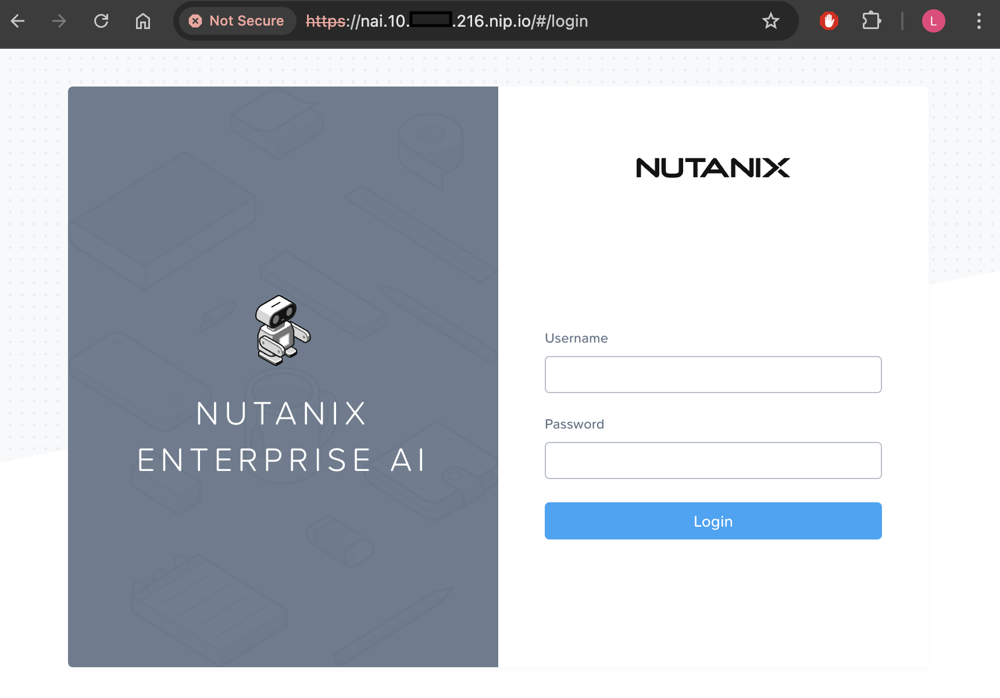

Deploying Nutanix Enterprise AI (NAI) NVD Reference Application
Version 2.3.0
This version of the NAI deployment is based on the Nutanix Enterprise AI (NAI) v2.3.0 release.
stateDiagram-v2
direction LR
state DeployNAI {
[*] --> DeployNAIAdmin
DeployNAIAdmin --> InstallSSLCert
InstallSSLCert --> DownloadModel
DownloadModel --> CreateNAI
CreateNAI --> [*]
}
[*] --> PreRequisites
PreRequisites --> DeployNAI
DeployNAI --> TestNAI : next section
TestNAI --> [*]Prepare for NAI Deployment
Changes in NAI v2.4.0
- Istio Ingress gateway is replaced with Envoy Gateway
- Knative is removed from NAI
- Kserve has been upgraded to 0.15.0
Enable NKP Applications through NKP GUI
Enable these NKP Operators from NKP GUI.
Note
In this lab, we will be using the Management Cluster Workspace to deploy our Nutanix Enterprise AI (NAI)
However, in a customer environment, it is recommended to use a separate workload NKP cluster.
- In the NKP GUI, Go to Clusters
- Click on Management Cluster Workspace
- Go to Applications
-
Search and enable the following applications: follow this order to install dependencies for NAI application
- Kube-prometheus-stack: version
70.4.2or later (pre-installed on NKP cluster)
- Kube-prometheus-stack: version
Enable Pre-requisite Applications
We will enable the following pre-requisite applications through command line:
- Envoy Gateway
v1.3.2 - Kserve:
v0.15.0in raw deployment mode
Note
The following application are pre-installed on NKP cluster with Pro license
- Cert Manager
Check if Cert Manager is installed (pre-installed on NKP cluster)
If not installed, use the following command to install it
-
Open Terminal in
VSCode -
Run the command to load the environment variables
-
Install Envoy Gateway
v1.3.2helm install eg oci://docker.io/envoyproxy/gateway-helm --version v1.3.2 -n envoy-gateway-system --create-namespace Pulled: docker.io/envoyproxy/gateway-helm:v1.3.2 Digest: sha256:0070bdddc186e6bd48007a84c6d264b796d14017436f38ccfe5ca621aefc1ca5 NAME: eg LAST DEPLOYED: Mon Aug 25 04:31:06 2025 NAMESPACE: envoy-gateway-system STATUS: deployed REVISION: 1 TEST SUITE: None -
Check if Envoy Gateway resources are ready
-
Open
$HOME/.envfile inVSCode -
Add (append) the following line and save it
-
Install
kserveusing the following commandsPulled: ghcr.io/kserve/charts/kserve-crd:v0.15.0 Digest: sha256:57ad1a5475fd625cb558214ba711752aa77b7d91686a391a5f5320cfa72f3fa8 Release "kserve-crd" has been upgraded. Happy Helming! NAME: kserve-crd LAST DEPLOYED: Mon May 19 06:11:30 2025 NAMESPACE: kserve STATUS: deployed REVISION: 2 TEST SUITE: None (devbox) -
Check if
kservepods are running
Note
It may take a few minutes for each application to be up and running. Monitor the deployment to make sure that these applications are running before moving on to the next section.
Deploy NAI
We will use the Docker login credentials we created in the previous section to download the NAI Docker images.
Change the Docker login credentials
The following Docker based environment variable values need to be changed from your own Docker environment variables to the credentials downloaded from Nutanix Portal.
$DOCKER_USERNAME$DOCKER_PASSWORD
-
Open
$HOME/.envfile inVSCode -
Add (append) the following environment variables and save it
-
Source the environment variables (if not done so already)
-
In
VSCodeExplorer pane, browse to$HOME/naifolder -
Click on New File and create file with the following name:
with the following content:
# nai-monitoring stack values for nai-monitoring stack deployment in NKE environment naiMonitoring: ## Component scraping node exporter ## nodeExporter: serviceMonitor: enabled: true endpoint: port: http-metrics scheme: http targetPort: 9100 namespaceSelector: matchNames: - kommander serviceSelector: matchLabels: app.kubernetes.io/name: prometheus-node-exporter app.kubernetes.io/component: metrics ## Component scraping dcgm exporter ## dcgmExporter: podLevelMetrics: true serviceMonitor: enabled: true endpoint: targetPort: 9400 namespaceSelector: matchNames: - kommander serviceSelector: matchLabels: app: nvidia-dcgm-exporterHow to get nkp-values.yaml file?
It is possible to get the values file using the following command
helm repo add ntnx-charts https://nutanix.github.io/helm-releases helm repo update ntnx-charts helm pull ntnx-charts/nai-core --version=nai-core-version --untar=trueAll the files will be untar'ed to a folder nai-core in the present working directory
Use the
nkp-values.yamlfile in the installation command -
In
VSCode, Under$HOME/naifolder, click on New File and create a file with the following name:with the following content:
#!/usr/bin/env bash set -ex set -o pipefail helm repo add ntnx-charts https://nutanix.github.io/helm-releases helm repo update ntnx-charts #NAI-core helm upgrade --install nai-core ntnx-charts/nai-core --version=$NAI_CORE_VERSION -n nai-system --create-namespace --wait \ --set imagePullSecret.credentials.username=$DOCKER_USERNAME \ --set imagePullSecret.credentials.password=$DOCKER_PASSWORD \ --insecure-skip-tls-verify \ --set naiApi.storageClassName=$NAI_API_RWX_STORAGECLASS \ --set defaultStorageClassName=$NAI_DEFAULT_RWO_STORAGECLASS \ -f nkp-values.yaml -
Run the following command to deploy NAI
$HOME/nai/nai-deploy.sh + set -o pipefail + helm repo update ntnx-charts Hang tight while we grab the latest from your chart repositories... ...Successfully got an update from the "ntnx-charts" chart repository Update Complete. ⎈Happy Helming!⎈ helm upgrade --install nai-core ntnx-charts/nai-core --version=$NAI_CORE_VERSION -n nai-system --create-namespace --wait \ --set imagePullSecret.credentials.username=$DOCKER_USERNAME \ --set imagePullSecret.credentials.password=$DOCKER_PASSWORD \ --insecure-skip-tls-verify \ -f nkp-values.yaml Release "nai-core" does not exist. Installing it now. NAME: nai-core LAST DEPLOYED: Mon Aug 25 04:59:28 2025 NAMESPACE: nai-system STATUS: deployed REVISION: 1 -
Verify that the NAI Core Pods are running and healthy
$ kubectl get po,deploy Context "nkplb-admin@nkplb" modified. Active namespace is "nai-system". NAME READY STATUS RESTARTS AGE pod/nai-api-58cbd47f86-dqt5z 1/1 Running 0 4m1s pod/nai-api-db-migrate-q2urg-nb8zc 0/1 Completed 0 4m1s pod/nai-db-0 1/1 Running 0 4m1s pod/nai-iep-model-controller-64d88cd94f-q85hf 1/1 Running 0 4m1s pod/nai-ui-dd8fb65c-zthbf 1/1 Running 0 4m1s pod/prometheus-nai-0 2/2 Running 0 4m1s NAME READY UP-TO-DATE AVAILABLE AGE deployment.apps/nai-api 1/1 1 1 4m1s deployment.apps/nai-iep-model-controller 1/1 1 1 4m1s deployment.apps/nai-ui 1/1 1 1 4m1s
Uninstall NAI v2.3.0 Dependencies
If you are upgrading NAI from v2.3.0 to v2.4.0, uninstall the following:
If Helm was used:
helm uninstall istio-ingressgateway -n istio-system --wait --ignore-not-found
helm uninstall istiod -n istio-system --wait --ignore-not-found
helm uninstall istio-base -n istio-system --wait --ignore-not-found
kubectl delete --ignore-not-found=true KnativeServing knative-serving -n knative-serving
helm uninstall knative-operator -n knative-serving --wait --ignore-not-found
kubectl wait --for=delete pod --all -n knative-serving --timeout=300s
If NKP Application were used for installation:
Go to NKP Cluster Dashboard > Application > Search and Uninstall the following:
- Istio
- Knative
Install SSL Certificate and Gateway Elements
In this section we will install SSL Certificate to access the NAI UI. This is required as the endpoint will only work with a ssl endpoint with a valid certificate.
NAI UI is accessible using the Ingress Gateway.
The following steps show how cert-manager can be used to generate a self signed certificate using the default selfsigned-issuer present in the cluster.
If you are using Public Certificate Authority (CA) for NAI SSL Certificate
If an organization generates certificates using a different mechanism then obtain the certificate + key and create a kubernetes secret manually using the following command:
Skip the steps in this section to create a self-signed certificate resource.
-
Get the NAI UI ingress gateway host using the following command:
NAI_UI_ENDPOINT=$(kubectl get svc -n envoy-gateway-system -l "gateway.envoyproxy.io/owning-gateway-name=nai-ingress-gateway,gateway.envoyproxy.io/owning-gateway-namespace=nai-system" -o jsonpath='{.items[0].status.loadBalancer.ingress[0].ip}' | grep -v '^$' || kubectl get svc -n envoy-gateway-system -l "gateway.envoyproxy.io/owning-gateway-name=nai-ingress-gateway,gateway.envoyproxy.io/owning-gateway-namespace=nai-system" -o jsonpath='{.items[0].status.loadBalancer.ingress[0].hostname}') -
Get the value of
NAI_UI_ENDPOINTenvironment variable -
We will use the command output e.g:
10.x.x.216as the IP address for NAI as reserved in this section -
Construct the FQDN of NAI UI using nip.io and we will use this FQDN as the certificate's Common Name (CN).
-
Create the ingress resource certificate using the following command:
cat << EOF | k apply -f - apiVersion: cert-manager.io/v1 kind: Certificate metadata: name: nai-cert namespace: nai-system spec: issuerRef: name: selfsigned-issuer kind: ClusterIssuer secretName: nai-cert commonName: nai.${NAI_UI_ENDPOINT}.nip.io dnsNames: - nai.${NAI_UI_ENDPOINT}.nip.io ipAddresses: - ${NAI_UI_ENDPOINT} EOF -
Patch the Envoy gateway with the
nai-certcertificate details -
Create EnvoyProxy
-
Patch the
nai-ingress-gatewayresource with the newEnvoyProxydetails
Accessing the UI
-
In a browser, open the following URL to connect to the NAI UI
-
Change the password for the
adminuser -
Login using
adminuser and password.
Download Model
We will download and user llama3 8B model which we sized for in the previous section.
- In the NAI GUI, go to Models
- Click on Import Model from Hugging Face
- Choose the
meta-llama/Meta-Llama-3.1-8B-Instructmodel -
Input your Hugging Face token that was created in the previous section and click Import
-
Provide the Model Instance Name as
Meta-Llama-3.1-8B-Instructand click Import -
Go to VSC Terminal to monitor the download
Get jobs in nai-admin namespacekubens nai-admin ✔ Active namespace is "nai-admin" kubectl get jobs NAME COMPLETIONS DURATION AGE nai-c0d6ca61-1629-43d2-b57a-9f-model-job 0/1 4m56s 4m56Validate creation of pods and PVCkubectl get po,pvc NAME READY STATUS RESTARTS AGE nai-c0d6ca61-1629-43d2-b57a-9f-model-job-9nmff 1/1 Running 0 4m49s NAME STATUS VOLUME CAPACITY ACCESS MODES STORAGECLASS VOLUMEATTRIBUTESCLASS AGE nai-c0d6ca61-1629-43d2-b57a-9f-pvc-claim Bound pvc-a63d27a4-2541-4293-b680-514b8b890fe0 28Gi RWX nai-nfs-storage <unset> 2dVerify download of model using pod logskubectl logs -f nai-c0d6ca61-1629-43d2-b57a-9f-model-job-9nmff /venv/lib/python3.9/site-packages/huggingface_hub/file_download.py:983: UserWarning: Not enough free disk space to download the file. The expected file size is: 0.05 MB. The target location /data/model-files only has 0.00 MB free disk space. warnings.warn( tokenizer_config.json: 100%|██████████| 51.0k/51.0k [00:00<00:00, 3.26MB/s] tokenizer.json: 100%|██████████| 9.09M/9.09M [00:00<00:00, 35.0MB/s]<00:30, 150MB/s] model-00004-of-00004.safetensors: 100%|██████████| 1.17G/1.17G [00:12<00:00, 94.1MB/s] model-00001-of-00004.safetensors: 100%|██████████| 4.98G/4.98G [04:23<00:00, 18.9MB/s] model-00003-of-00004.safetensors: 100%|██████████| 4.92G/4.92G [04:33<00:00, 18.0MB/s] model-00002-of-00004.safetensors: 100%|██████████| 5.00G/5.00G [04:47<00:00, 17.4MB/s] Fetching 16 files: 100%|██████████| 16/16 [05:42<00:00, 21.43s/it]:33<00:52, 9.33MB/s] ## Successfully downloaded model_files|██████████| 5.00G/5.00G [04:47<00:00, 110MB/s] Deleting directory : /data/hf_cache -
Optional - verify the events in the namespace for the pvc creation
$ k get events | awk '{print $1, $3}' 3m43s Scheduled 3m43s SuccessfulAttachVolume 3m36s Pulling 3m29s Pulled 3m29s Created 3m29s Started 3m43s SuccessfulCreate 90s Completed 3m53s Provisioning 3m53s ExternalProvisioning 3m45s ProvisioningSucceeded 3m53s PvcCreateSuccessful 3m48s PvcNotBound 3m43s ModelProcessorJobActive 90s ModelProcessorJobComplete
The model is downloaded to the Nutanix Files pvc volume.
After a successful model import, you will see it in Active status in the NAI UI under Models menu

Create and Test Inference Endpoint
In this section we will create an inference endpoint using the downloaded model.
- Navigate to Inference Endpoints menu and click on Create Endpoint button
-
Fill the following details based on GPU or CPU availability:
Tip
NAI
v2.3can host a model up to 7 billion parameters on CPU only nodes- Endpoint Name:
llama-8b - Model Instance Name:
Meta-LLaMA-8B-Instruct - Use GPUs for running the models :
Checked - No of GPUs (per instance):
- GPU Card:
NVIDIA-L40S(or other available GPU) - No of Instances:
1 - API Keys: Create a new API key or use an existing one
- Endpoint Name:
llama-8b - Model Instance Name:
Meta-LLaMA-8B-Instruct - Use GPUs for running the models :
leave unchecked - No of Instances:
1 - API Keys: Create a new API key or use an existing one
- Endpoint Name:
-
Click on Create
-
Monitor the
nai-adminnamespace to check if the services are coming up -
Check the events in the
nai-adminnamespace for resource usage to make sure there are no errors$ kubectl get events -n nai-admin --sort-by='.lastTimestamp' | awk '{print $1, $3, $5}' 110s FinalizerUpdate Updated 110s FinalizerUpdate Updated 110s RevisionReady Revision 110s ConfigurationReady Configuration 110s LatestReadyUpdate LatestReadyRevisionName 110s Created Created 110s Created Created 110s Created Created 110s InferenceServiceReady InferenceService 110s Created Created -
Once the services are running, check the status of the inference service